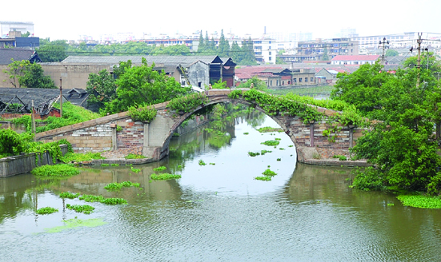

嘉兴市文物保护网 · 市级文物保护单位 · 2014-06-16 · 原文

秋泾桥位于嘉兴市南湖区解放街道航明社区闸前街东端，原名迎春桥，始建年份不详，据康熙《秀水县志》载，明崇祯初重建，现桥额旁镌有“嘉庆十一年”、“里人重修”字样，可知现桥为清嘉庆十一年（1806）重修。系单孔有栏石拱桥，东西横跨秋泾河。桥全长58.65米，桥面宽4.85米，拱跨15.6米，矢高6米。拱圈石分节砌筑，金刚墙错缝顺砌。桥栏尚存狮子望柱2个，方型望柱5个，东、西侧落坡分别有石阶39级和35级。南北桥额为“秋泾桥”，顶盘石中央刻有水涡纹，桥楹联风化严重，难以辨识。秋泾桥历史悠久、规模较大、造型美观，是市区仅存的少量石拱桥之一，具有较高的历史和艺术价值。1981年公布为嘉兴市级文物保护单位。